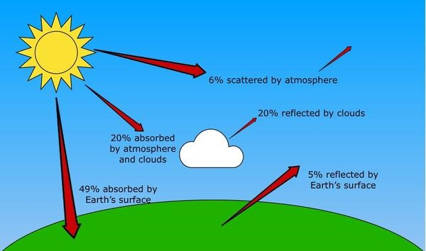
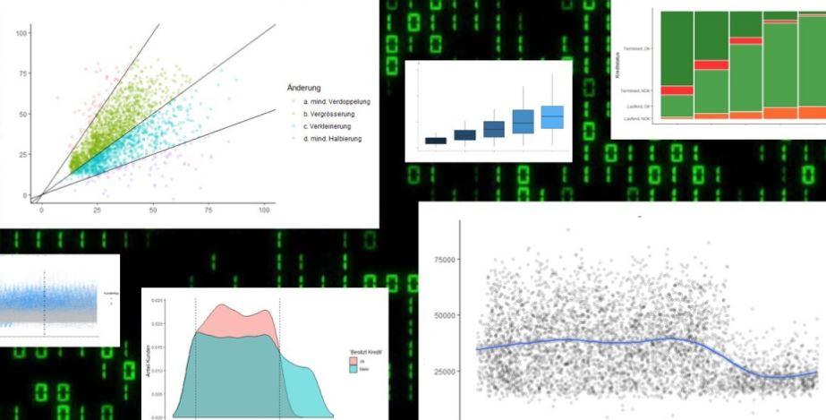
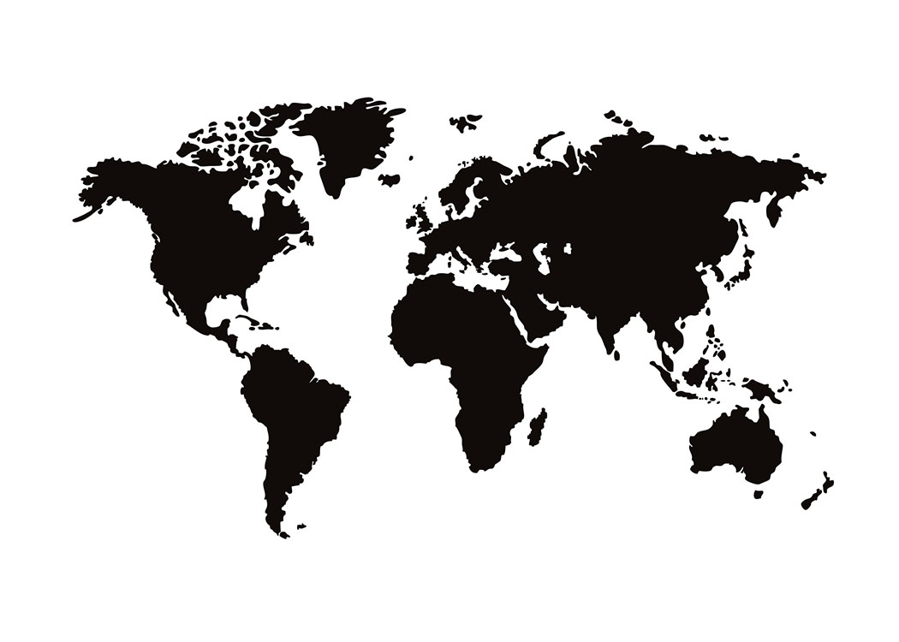

Anhand dieser Seite werde ich dir meine bisherigen Arbeiten zeigen.
Hierbei handelt es sich um Arbeiten die ich im Rahmen des Studiums erstellt habe.
Falls du Fragen zu diesen Arbeiten hast
oder du Interesse an einer Zusammenarbeit hast, dann kontaktiere mich
gerne über die angegebenen Kontaktdaten.
In diesem Projekt wurden Daten des Paul Scherrer Instituts (PSI) genutzt, um mittels Time Series Forecasting
die Lebensdauer von Maschinen präzise vorherzusagen. Ziel war es, ein zuverlässiges Modell zu entwickeln,
das den Zeitpunkt identifiziert, zu dem eine Maschine ersetzt werden muss, um Ausfallzeiten zu minimieren
und die Effizienz der Anlagenwartung zu maximieren. Um dieses Ziel zu erreichen, wurden verschiedene prognostische
Methoden und Algorithmen evaluiert, darunter fortschrittliche Techniken wie ARIMA (AutoRegressive Integrated Moving Average)
und XGBoost (eXtreme Gradient Boosting). Der Prozess umfasste eine gründliche Analyse und Verarbeitung der Zeitreihendaten, um Trends,
Saisonalitäten und mögliche Anomalien zu erkennen, die Aufschluss über die Lebensdauer der Maschinen geben könnten. Die besondere
Herausforderung des Projekts lag darin, trotz der geringen Datenmenge präzise Langzeitvorhersagen über die Lebensdauer von Maschinen zu erstellen.
In diesem Projekt mit Daten von Thermoplan lag der Fokus darauf,
zu analysieren, wie Menschen auf verschiedenen Kontinenten ihren Kaffee trinken
und welche Präferenzen dabei erkennbar sind. Durch die Untersuchung von Verbrauchsmustern,
bevorzugten Kaffeearten und Brühmethoden in unterschiedlichen geografischen Regionen konnte
ein detailliertes Verständnis der globalen Kaffeekultur entwickelt werden.
Die Analyse bezog sich nicht nur auf die Art des konsumierten Kaffees,
sondern auch auf die Häufigkeit des Konsums, die Tageszeit, zu der Kaffee bevorzugt getrunken wird,
und die Vorlieben für bestimmte Kaffeezusätze wie Milch, Zucker oder Sirup. Weiterhin wurden basierend auf
den Erkenntnissen strategische Marketingempfehlungen für Thermoplan entwickelt.

Das Projekt zielt darauf ab, Strategien gegen den durch Treibhausgase wie Kohlendioxid und Methan beschleunigten Klimawandel
zu entwickeln, wobei die Energieerzeugung, die für mehr als 80% des weltweiten CO2-Ausstosses verantwortlich ist, im Fokus steht,
um die globale Einigung auf eine 'Netto-Null' CO2-Emission bis 2050 zu unterstützen. Der Fokus lag dabei auf der Schweiz,
Deutschland und Spanien, wobei die Herausforderung bestand, vertrauenswürdige Open-Source-Daten zu finden. Für jedes dieser
Länder wurden spezifische Policy-Empfehlungen erstellt, um lokale Massnahmen zur Reduzierung der CO2-Emissionen zu unterstützen und
den Weg zu 'Netto-Null' bis 2050 zu ebnen. Als abschliessende Abgabe wurde ein interaktives Dashboard mittels Heroku erstellt,
das die Analyseergebnisse und Empfehlungen visualisiert und Stakeholdern ermöglicht, datengestützte Entscheidungen zur Klimapolitik und
Emissionsreduktion in den fokussierten Ländern zu treffen.
Das Ziel dieser Challenge bestand darin, einen fortschrittlichen Empfehlungsalgorithmus für Filme zu entwickeln,
der nicht nur die Inhaltszusammenfassungen (Overviews) und individuellen Bewertungen (Ratings) der Nutzer berücksichtigt,
sondern auch detaillierte Kundenprofile erstellt. Durch die Analyse der Vorlieben und Sehgewohnheiten der Nutzer sollten
personalisierte Filmempfehlungen generiert werden, um das Seherlebnis zu verbessern und die Nutzerbindung zu erhöhen.
Die Herausforderung lag insbesondere darin, die Vielfalt und Komplexität der Nutzerinteressen zu verstehen und in Echtzeit Empfehlungen zu liefern,
die sowohl die aktuelle Stimmung als auch die langfristigen Präferenzen der Nutzer widerspiegeln. Dies erforderte den Einsatz fortschrittlicher Techniken
im Bereich des maschinellen Lernens und der künstlichen Intelligenz, einschließlich Natural Language Processing (NLP) zur Analyse der Filmüberblicke.
2021
Crossselling
in Banking

Es ging darum Daten, einer fiktiven tschechischen Firma auszuwerten.
Das Ziel war es, atraktive Kunden zu identifizieren, welche
mit anderen Produkten des Unternehmens interagieren könnten.
Die Bank sollte in weder die Ausgaben erhöhen noch Vermögen verlieren.
Realisiert wurde diese Challenge mittels R. Dazu wurden die Daten
manipuliert und divere Plots erstellt.
2022
Klimadaten auswertung

Die Hauptaufgabe war es, ein interaktives Dashboar zu erstellen.
Dieses sollte die Klimadaten der letzten 50 Jahre auswerten.
Dabei sollte es möglich sein, die Daten nach verschiedenen
Kriterien zu filtern. Es wurde auf Korrelation zwischen
Extremregenfällen und dem Wirtschaftsertrag getestet.
Die Auswertung wurde mit Python ausgeführt.